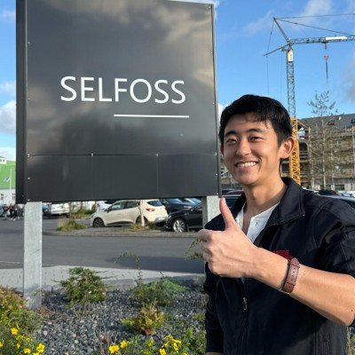

I'm a 4th year physics student at the University of California, Berkeley. My main interest is uncertainty quantification, knowing how much to trust a result and saying so honestly, whether it comes from an engineering model, an AI system, or a spacecraft instrument. I've applied it to AI assisted feasibility review for early stage space missions, and now to particle data from NASA's MAVEN Mars orbiter.
I worked as a Systems Engineering Intern at the NASA Jet Propulsion Laboratory, where I co-developed an AI assisted early stage mission formulation framework. That work led to a Caltech provisional patent application, a talk at AIAA SciTech 2026, and a journal manuscript now under review. I was fortunate to be mentored there by Kelli McCoy, Jonathan Sauder, Benjamin Nuernberger, and Rob Royce.
I'm currently doing research at UC Berkeley's Space Sciences Laboratory with the Solar Energetic Particle instrument on NASA's MAVEN Mars orbiter, where I'm starting to add uncertainty quantification to the analysis.
I was also Camera Lead for SolarSURFER, a student solar sail CubeSat team at Johns Hopkins University, with support from the Johns Hopkins Applied Physics Laboratory.
I'm applying to M.S. and Ph.D. programs in aerospace engineering, computational science, and applied mathematics, and I'm equally interested in research roles in industry.
You can reach me at chrishlohmeyer@berkeley.edu.

My research centers on uncertainty quantification across engineering and science. At the NASA Jet Propulsion Laboratory that meant AI assisted engineering decisions, which led to MABEL, a framework where a language model retrieves precedent and a separate statistical layer renders the verdict. At the Space Sciences Laboratory it means telling real signals apart from instrument effects in MAVEN particle data.
Working with data from the SEP instrument on NASA's MAVEN Mars orbiter, turning signals usually discarded as background into science. Reproduced published SEP analyses in IDL/SPEDAS, then followed up on detector background effects and explored whether Scorpius X-1 X-ray occultations could reveal atmospheric changes during Mars's 2018 global dust storm.
Currently building the group's catalog of SEP saturation events. Found a first candidate in August 2018 data and cross-checked it against MAVEN's solar wind, magnetic field, and instrument pointing measurements. Now starting to add uncertainty quantification to the analysis.
An evidence-triage framework for early-stage concept feasibility assessment, addressing novelty collapse, the failure mode in which LLM-based assessors penalize novel concepts for the absence of historical precedent rather than for lack of merit.
Two layers. A retrieval model surfaces historical precedents; a deterministic statistical layer renders the verdict using weighted maximum-likelihood estimation, Fisher information, and Wilson-score 90% confidence intervals, producing EVIDENCE-BACKED / INFEASIBLE / UNCERTAIN-NOVEL classifications. The system declines to rule when evidence is insufficient, preserving genuinely novel concepts that a confidence-maximizing assessor would discard.
Implemented locally on quantized open-weight models via llama.cpp. Currently running a 20-case validation study against historical mission concepts to characterize verdict accuracy and interval calibration. Not yet publicly released.
Co-developed a seven-module LLM-powered engineering co-pilot that converts raw mission ideas into ranked concept alternatives and trade-study visualizations in minutes. Covered by a U.S. provisional patent application filed through Caltech; presented at AIAA SciTech 2026.
Built SCORE, an agentic multi-agent screening system that turns requirements and key performance parameters into decision-ready briefs within a single meeting. Also created a physics-based simulation of the CADRE lunar daytime autonomous rover mission and used the REIMAGINE toolkit to explore feasibility for a lunar nighttime scenario in minutes; senior systems engineers said the equivalent study once took more than six months.
Identified novelty collapse in the assessment pipeline, a systematic bias against unprecedented concepts, and prototyped the statistical triage approach that became MABEL.
Led R&D of the nine-camera hyperspectral imaging payload for SolarSURFER, a solar sail CubeSat for Earth observation, coordinating optical, mechanical, and thermal subsystems to achieve 400–2000 nm coverage from sun-synchronous orbit. Implemented the CMOS-based camera system within 1U CubeSat constraints, addressing thermal management, data routing, and power distribution while maintaining calibration across extended temperature ranges.
Developed MATLAB simulations for optimal imaging geometry in sun-synchronous polar orbit, and identified and corrected three mission-critical design flaws through physics-based analysis. Collaborated with Dr. Kim Aaron, NASA Jet Propulsion Laboratory Chief Engineer for Architecture and Formulation, to validate system architecture and mission design feasibility.